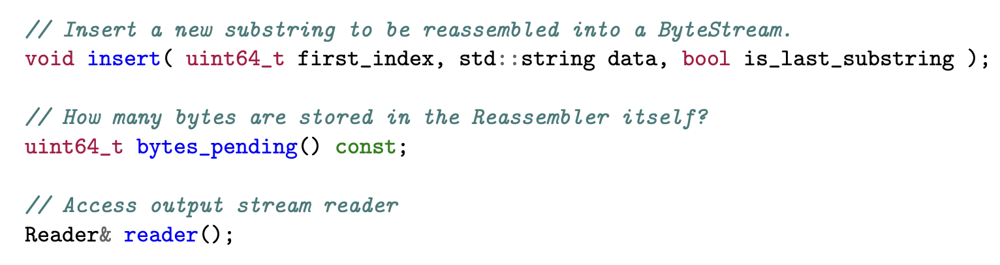
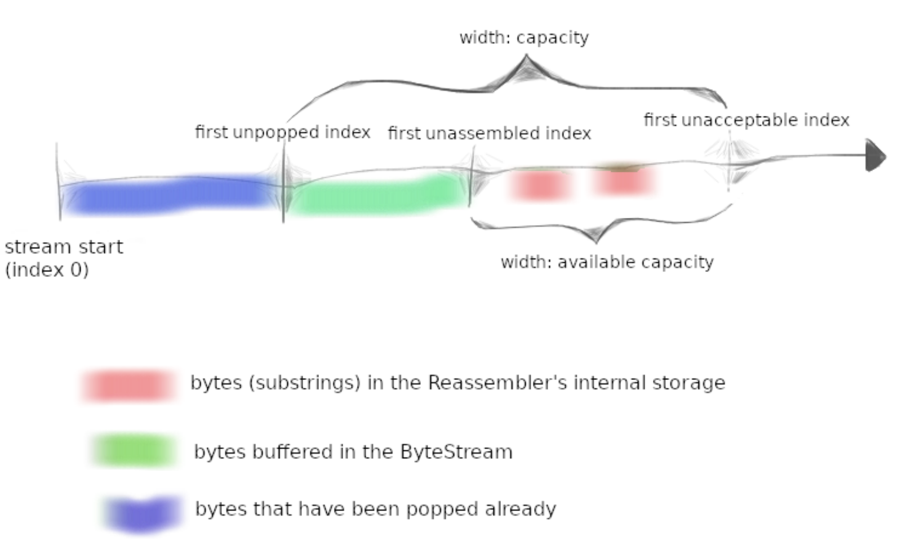
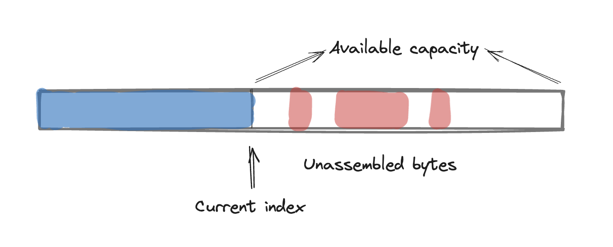
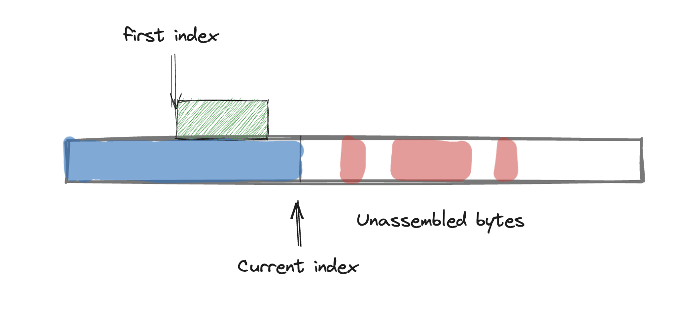
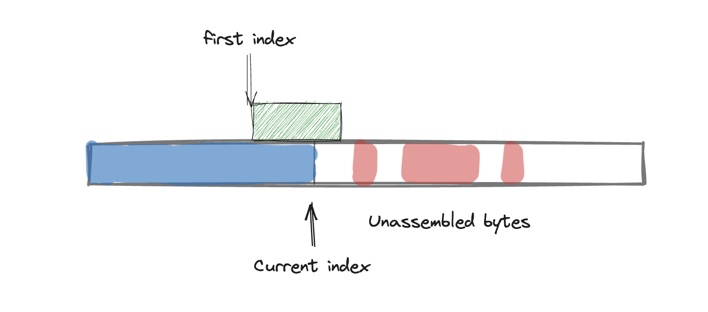
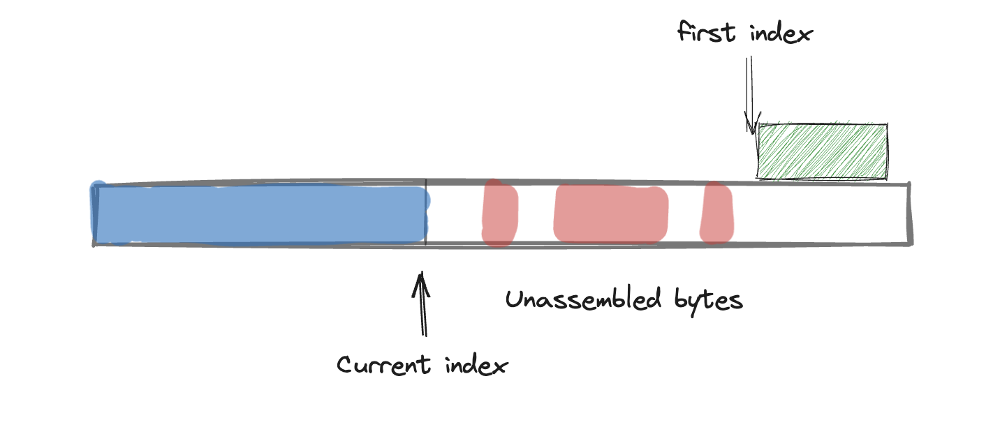
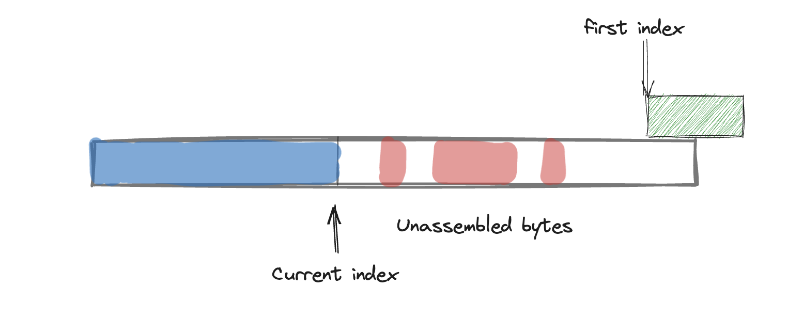

Networking Reassembler
最近在疯狂科研中，无数次尝试不同的方法，调各种各样的参数。闲暇之余想了解一下TCP内部的原理，看到CS144的Lab有这个实验，开一个新的坑，不知道在忙碌的研二期间能不能完成...
Task
Lab的任务是基于上一个lab实现的stream抽象，实现一个TCP receiver：将接受到的datagram变成一个可靠有序的字节流。从TCP sender的角度讲，它会把字节流分割成segments，但是网络本身是不可靠的，在传输datagram的过程中，可能会发生丢包，或者将同一个包发送两次。所以TCP receiver需要实现的不仅仅是接受数据，还需要确保将接受到的datagram重新组合成连续不重复的字节流，保证可靠的通信。
本次实验的目的就是实现一个Reassembler。它负责接受子字符串（子字符串包含一个字节的string，和对应字节的index，数据流的每一个字节都有自己的index。
上个实验实现的bytestream有两个端点，一个是writer side，一个是reader side。Writer side负责向stream写数据，reader side作为消费者，从stream中读取数据。
Reassembler的interface：

Why am I doing this？TCP对重排序和重复的鲁棒性来源于其将字节流的任意片段重新拼接回原始流的能力。将此功能实现为一个离散的可测试模块，将使处理接收的数据段更加容易。
What should the Reassembler store internally?
Reassembler是receiver的一个组件。它需要解决三种输入的问题：
- stream中的next bytes。如果当前的byte的index与stream中存储的index符合next关系，则立马将该字节推入writer。
- 当前的bytes仍然可以放入stream，但是由于它之前的bytes还没有接受到，这些需要存储在reassembler内部等待使用。
- 超出当前stream可用容量的字节。这些应当被丢弃。

从图中可以理解到，capacity代表的就是stream的capacity，如果在当前capacity内，可以直接向bytestream内部推送，如果不在则存储在reassembler内部等待使用。
Implementation
如何存储un-assemble的数据
un-assemble的数据表示在capacity范围之内但由于前面index的byte未到达而不能立即push到writer中的bytes。这些bytes应当存放在Reassembler内部，而且需要一个检查机制，一旦当前的index符合un-assemble数据，就立刻找出这个数据并插入writer中。
这里可以用hash map去实现。
Hash map的key存储index，hash
map的value存储对应的byte。同时Reassembler内部维护一个curr_idx，表示first
unassembled index数据。
每次插入一个新的数据时，先去对比curr_idx，如果比curr_idx大，则存储到哈希表中，如果等于curr_idx则直接插入writer中。
如果新插入的idx小于curr_idx，情况就比较复杂。
首先需要计算新插入的idx和curr_idx之间的间隔，标记为l。对比l和新插入的bytes len，会产生以下几种情况：
- len>l：说明新插入的与当前有重复部分，但后半段不重复，应把前半段重复部分省去，只保留后部分，push到writer，更新curr_idx
- len=l：完全重复，抛弃
- len<l：完全重复，抛弃
如果新插入的bytes增加了curr_idx，而且当前的curr_idx覆盖了Reassembler内部哈希表中的一些entry，也需要上述操作，因此可以抽象一个方法：
void push(uint64_t first_index, std::string data) {
if (curr_index < first_index) {
// store into hash map or if it already exist, skip
// update minimum_index
return;
} else if (curr_index == first_index) {
// call writer to write into bytestream
return;
}
// curr_index > first_index
uint64_t overlap_len = curr_index - first_index;
uint64_t byte_len = data.len();
if (byte_len <= overlap_len) {
// discard
return;
}
// byte_len > overlap_len
// get un overlap part of data and write to writer
return;
}如何自动检测当前的un-assemble的数据是否该push到writer？
这本质上是在解决insert的算法流程，下面用伪代码的形式说明
void insert(uint64_t first_index, std::string data, bool is_last_substring) {
// fisrt push
push(first_index, data);
// checking hash map
// we need maintain a variable that indicates current minimum index of hash map
while (curr_index <= minimum_index) {
// there are still entries need to be pushed to writer
push(minimum_index, data);
}
return;
}每次插入新的数据时，都需要先尝试去插入，然后检测当前内部的hash map中是否存在可以继续插入的元素。还需要在插入hash map时，始终维护一个minimum index，方便后续插入操作进行判别。
以上仅为大致的思路，在实际的实现过程中还是会有很多边界case需要根据单元测试进行调整，以下详细叙述整体的实现方案。综合来看，实现Reassembler有两个比较核心的问题，需要分类讨论。
- Q1：数据推送时，判断直接推送到bytestream中；一部分推送到bytestream中；还是推送到未装配的缓存区域中
- Q2：在未装配的缓存区域中的数据，如何避免重复，如何合并
Q1：数据该放到哪里
首先需要知道，控制容量大小的信息在Bytestream中，已经推送到Bytestream中的数据会占用一部分capacity，剩余的容量可以通过output_.writer().available_capacity()获取。

如上图所示，蓝色部分表示已经推入bytestream但还没有被consumer读取的数据，红色部分表示不能立即推送到bytestream而缓存在Reassembler内部的数据。
当新输入一个数据时，这个数据会携带一个first_index，表示当前字节流中第一个字节在全局数据中的位置。举个例子，比如客户端想发送“abcdefghigklmn”这一串数据到服务器，因为字节流会被截断发送，同时TCP是一个面向连接的，可靠的，基于字节流的传输层通信协议，可靠性是指接受端接受到的数据不能出现丢包、错误以及乱序。因此为了保证顺序，在每一个数据包中会包含其在全局中的位置，可以让接受端的TCP协议重组，组装好后再推送给上层，这样在应用层的角度来看，数据就是可靠的。
由于网络的不可靠性，因此数据很有可能与前方的包有重叠的情况。因此需要Reassmebler拥有自动处理这种重叠情况的能力。综合以上因素考虑，可以根据first_index把数据分成四种情况。
- 当first index ≤ current index 并且数据包的长度也小于current index：这种情况的处理非常简单，直接抛弃数据包即可（因为数据完全重叠）。

- 当first index ≤ current index并且数据包的长度大于current index：这种表示有部分重叠，需要做的操作就是根据当前的current index和first index计算在数据包内的相对索引，从current index所表示的位置处截断，保留后面的数据，并立即推入bytestream。

- 当first index > current index并且数据包的长度可以放入缓存区中：这表示数据包不能被立即推入bytestream，因此需要推送到缓存区中缓存。

- 当first index > current index并且数据包的一部分可以放入缓存区中：这表示当前数据包的前半部分才能放入缓存区，需要把后半部分截断。

还有一种就是当现在available capacity所支持的数据量不能容纳超过数据量的数据，这种数据也应当直接丢弃。举个例子，比如当前的bytestream的capacity是8，current index是56，available capacity是3，也就是当前最多能接受数据的索引应当在56-58之内，59之后不能被接受。
但这种只是正常情况，还有很多极限的情况，比如数据长度比capacity还要长，这时候就只能保留可以放入缓存区的数据。
根据上面的分类讨论，可以抽象出一个push操作，涵盖所有情况。
void Reassembler::push(uint64_t first_index, string data) {
// check if its beyond capacity
uint64_t cap = output_.writer().available_capacity();
if (cap == 0 || first_index >= current_index_ + cap) {
return;
}
// truncate data beyond the capacity, so the data below will always fit in available capacity
if ((first_index + data.length()) > (current_index_ + cap)) {
uint64_t end_index = current_index_ + cap;
data = data.substr(0, end_index - first_index);
}
// insert into unassembled map
if (current_index_ < first_index) {
merge_and_insert(first_index, data);
return;
}
// can directly input into bytestream
if (current_index_ == first_index) {
output_.writer().push(data);
current_index_ += data.length();
return;
}
// current_index > first_index
uint64_t overlap_len = current_index_ - first_index;
uint64_t byte_len = data.length();
if (byte_len <= overlap_len) {
// discard this data, already input into bytestream
return;
}
// byte_len > overlap_len
std::string rest = data.substr(overlap_len);
output_.writer().push(rest);
current_index_+= rest.length();
return;
}Q2：缓存区中的数据如何自动校准
Reassembler的缓存数据结构选择std::map。原因是因为每一个需要缓存的数据都包含index和data两种数据，为了在需要数据时更快的查找到相关的数据，采用哈希表。不采用unordered map的原因是，unordered map是无序的，在每次插入数据之后，如果新插入的数据与前后两个相邻数据有重叠，那么就需要从哈希表访问相邻两个index的数据，合并之后还需要再检查有无重复，实现比较复杂。如果采用有序的map，直接按顺序遍历一边哈希表，把相邻两个有重叠的数据处理一下即可，实现较为简单。
void Reassembler::merge_and_insert(uint64_t first_index, std::string data) {
// insert first
auto entry = unassemble_map_.find(first_index);
if (entry == unassemble_map_.end()) {
unassemble_map_[first_index] = data;
} else {
if (data.length() > entry->second.length()) {
unassemble_map_[first_index] = data;
}
}
auto it = unassemble_map_.begin();
while (it != unassemble_map_.end()) {
auto next_it = std::next(it);
if (next_it == unassemble_map_.end()) break;
uint64_t data_len = it->second.length();
uint64_t idx = it->first;
if (data_len + idx == next_it->first) {
unassemble_map_[idx].append(next_it->second);
unassemble_map_.erase(next_it);
} else if (data_len + idx >= next_it->first + next_it->second.length()) {
unassemble_map_.erase(next_it);
} else if (data_len + idx > next_it->first) {
uint64_t overlap_len = data_len + idx - next_it->first;
std::string surpass_str = next_it->second.substr(overlap_len);
unassemble_map_[idx].append(surpass_str);
unassemble_map_.erase(next_it);
} else {
++it;
}
}
}